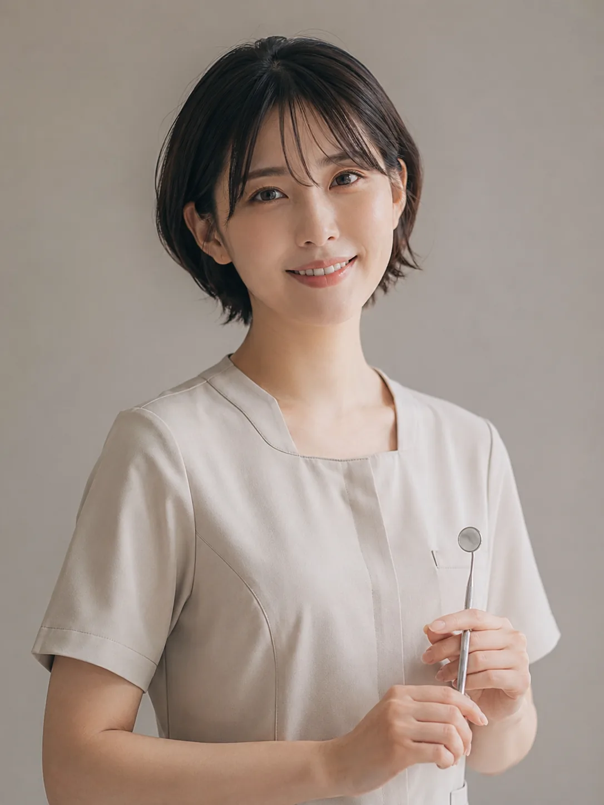
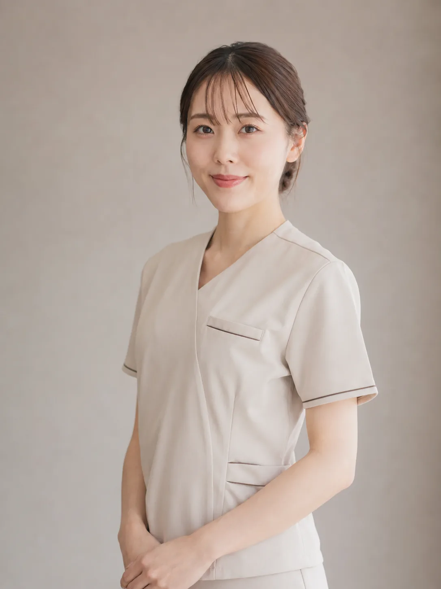
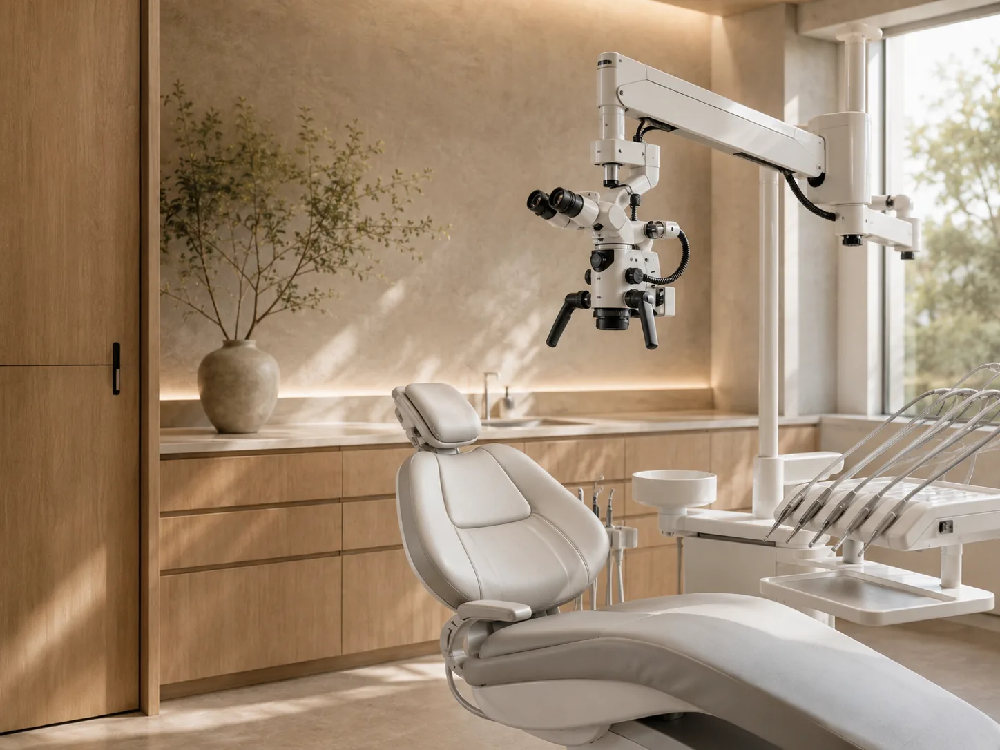
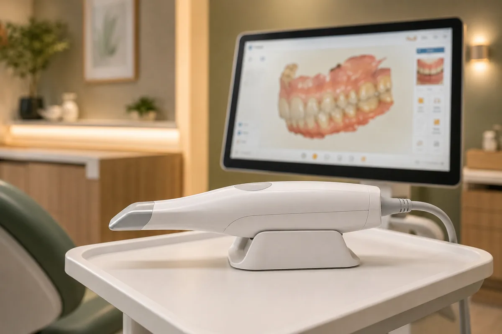
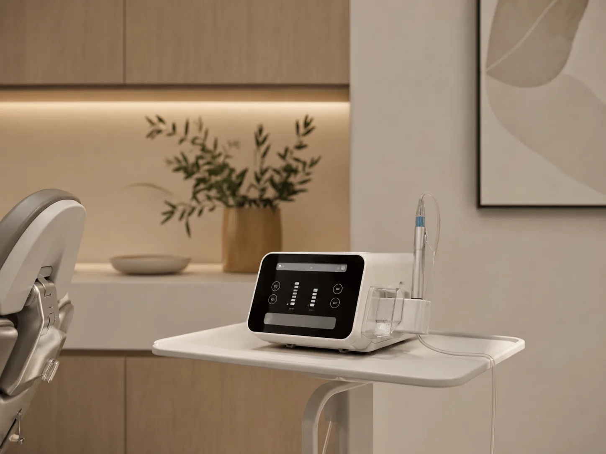
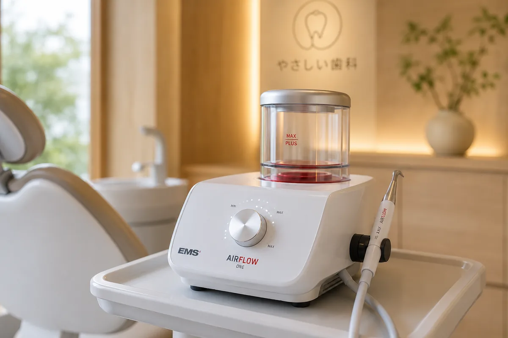
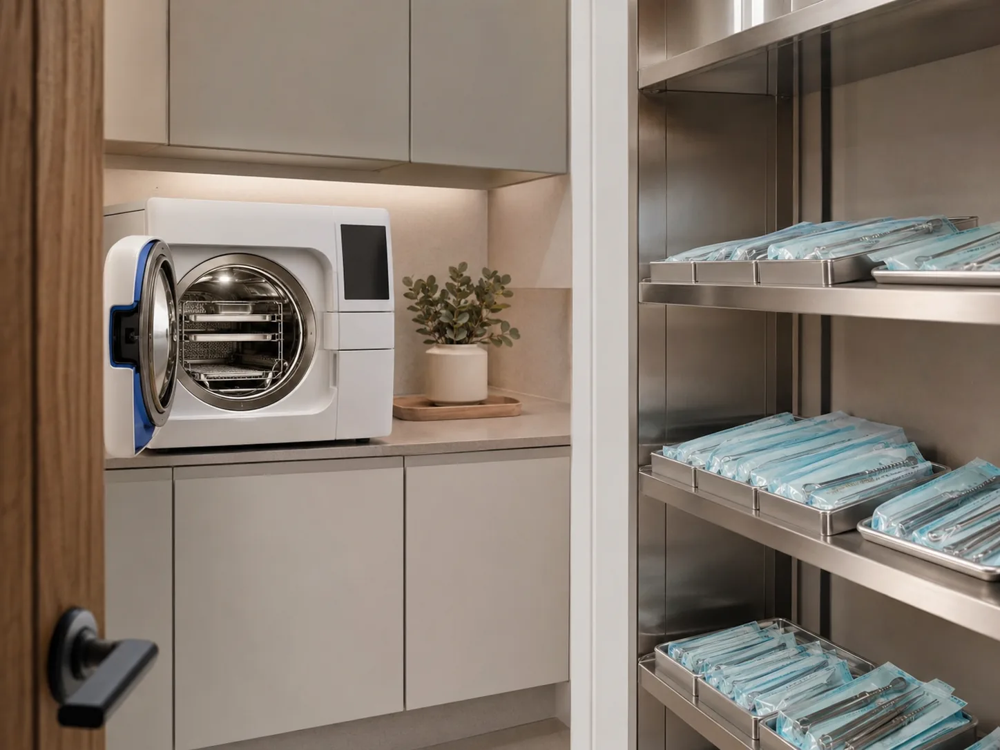
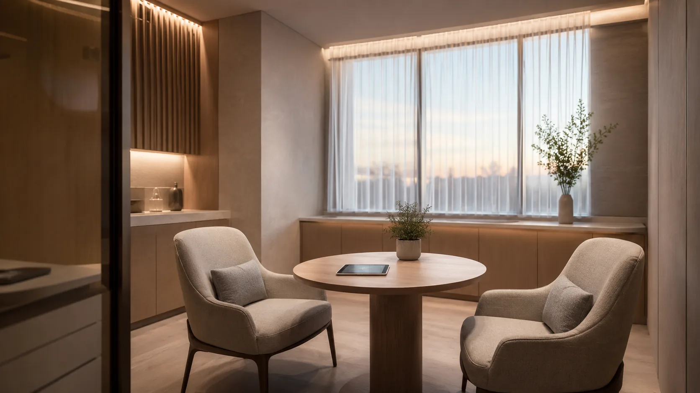

歯科用CT（3D）
立体的に顎の骨や神経を把握。インプラントや親知らずの診断精度を高めます。

通うほどに、
前向きになれる場所へ。
陽だまりデンタルクリニック院長の藤原陽介です。
歯科医院は、痛くなってから渋々通う場所——そんなイメージを変えたいと考えてきました。静かで心地よい空間と、納得いただける丁寧な説明。そのうえで、できるだけ削らず、抜かず、長く健康を保つための治療をご提案します。
大学病院での口腔外科、専門クリニックでの研鑽を経て、2018年に当院を開業しました。矯正専門医の副院長とともに、一人ひとりに寄り添った医療をお届けします。
藤原 陽介
東京歯科大学卒 / 歯学博士
日本口腔外科学会認定医
整った歯並びは、
一生の自信になる。
副院長の藤原美咲です。矯正歯科を専門としています。
歯並びや噛み合わせは、見た目の印象だけでなく、お口全体の健康に深く関わります。当院では、目立ちにくいマウスピース矯正から本格的なワイヤー矯正まで、ライフスタイルに合わせた選択肢をご用意しています。
「相談だけでも」という方も大歓迎です。気になることがあれば、どうぞお気軽にお声がけください。
藤原 美咲
東京医科歯科大学卒 / 歯学博士
日本矯正歯科学会認定医

山田 あかり
歯科衛生士・チーフ

鈴木 ゆい
歯科衛生士
田中 さくら
歯科衛生士

佐藤 みなみ
歯科衛生士
高橋 りこ
歯科助手
渡辺 はな
歯科助手
中村 まい
受付
立体的に顎の骨や神経を把握。インプラントや親知らずの診断精度を高めます。

最大20倍に拡大し、肉眼では見えない領域まで精密な治療を実現します。

型取り不要。3Dデジタルスキャンで、矯正や補綴をスムーズに進めます。

コンピュータ制御で注入速度を一定に管理し、麻酔時の痛みを最小限に。

微細なパウダーで着色汚れやバイオフィルムを除去。予防ケアの主力機器です。

クラスB滅菌器を導入。器具は患者さまごとに完全滅菌し、衛生管理を徹底します。

明るく開放的な受付。初めての方も緊張せずにお過ごしいただけるよう、温かみのある木質の空間に整えています。

ゆったりとしたソファとナチュラルなインテリア。自然光のなかで、待ち時間まで心地よくお過ごしいただけます。

プライバシーに配慮した半個室の診察室。各チェアにモニターを設置し、治療内容を丁寧にご説明します。

個室の相談スペース。治療計画のご説明や矯正相談など、ご不安にじっくりお答えする大切な場所です。

Reservation
ご予約・ご相談は、お電話またはWEBから承ります。